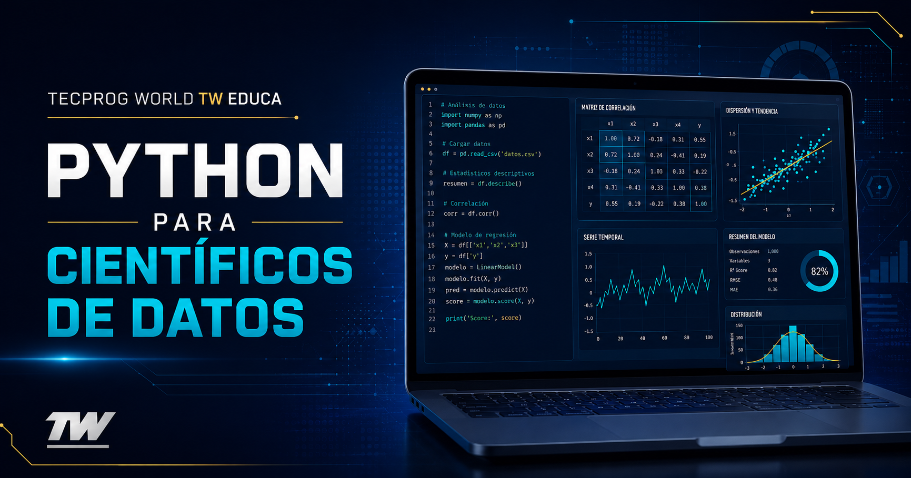

Tecprog World
Python para científicos de datos | TW Educa
Fundamentos de Python, análisis de datos, visualización, automatización y preparación para machine learning.

Tecprog World
Fundamentos de Python, análisis de datos, visualización, automatización y preparación para machine learning.
